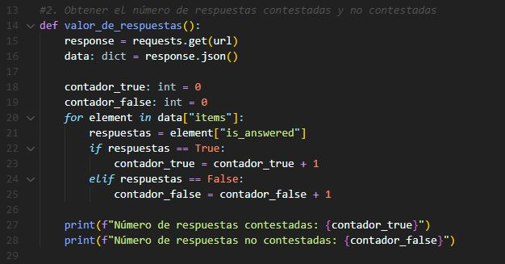

Programación
El lenguaje de desarrollo elegidó fue Python
- 1. Conectarse al enlace
- 2. Obtener el número de respuestas contestadas y no contestadas año 
- 3. Obtener la respuesta con mayor owners
- 4. Obtener la respuesta con menor número de vistas
- 5. Obtener la respuesta más vieja y más actual
- 6. Imprimir en consola del punto 2 al 5